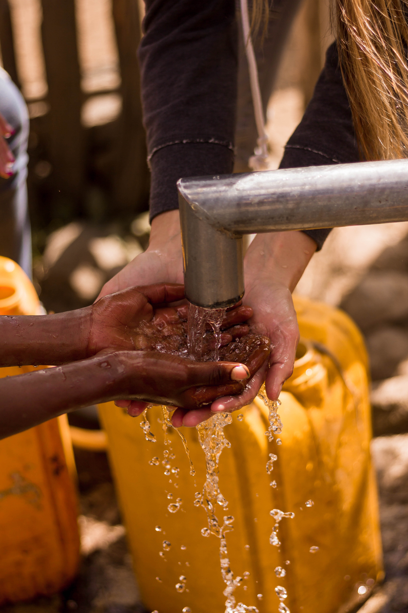

Number of people affected: 2000 M +
While substantial progress has been made in increasing access to clean drinking water and sanitation, billions of people—mostly in rural areas—still lack these basic services. Worldwide, one in three people do not have access to safe drinking water, two out of five people do not have a basic hand-washing facility with soap and water, and more than 673 million people still practice open defecation.
The COVID-19 pandemic has demonstrated the critical importance of sanitation, hygiene and adequate access to clean water for preventing and containing diseases. Hand hygiene saves lives. According to the World Health Organization, handwashing is one of the most effective actions you can take to reduce the spread of pathogens and prevent infections, including the COVID-19 virus. Yet billions of people still lack safe water sanitation, and funding is inadequate.